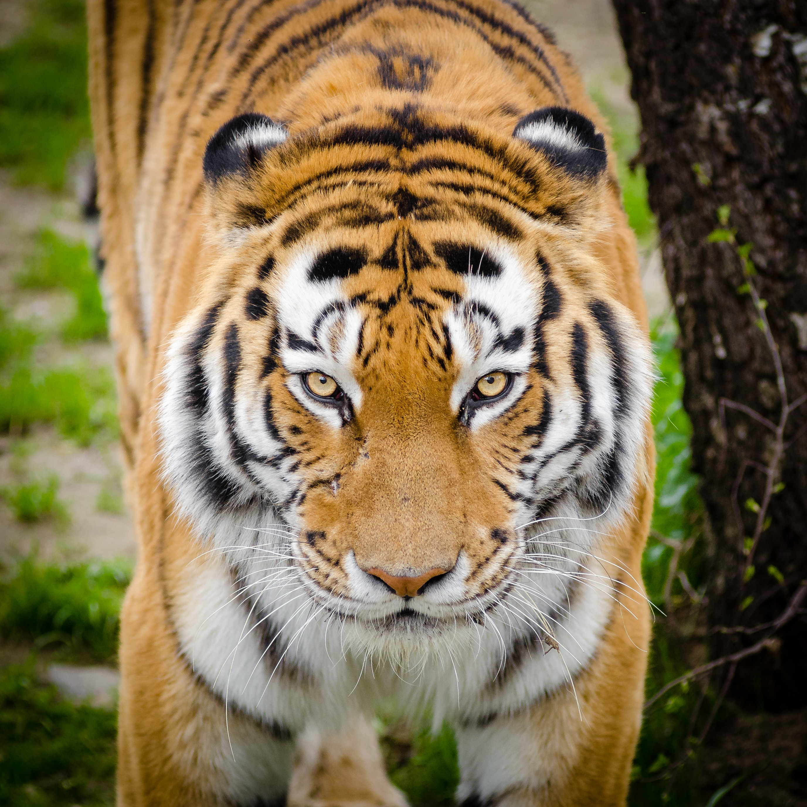
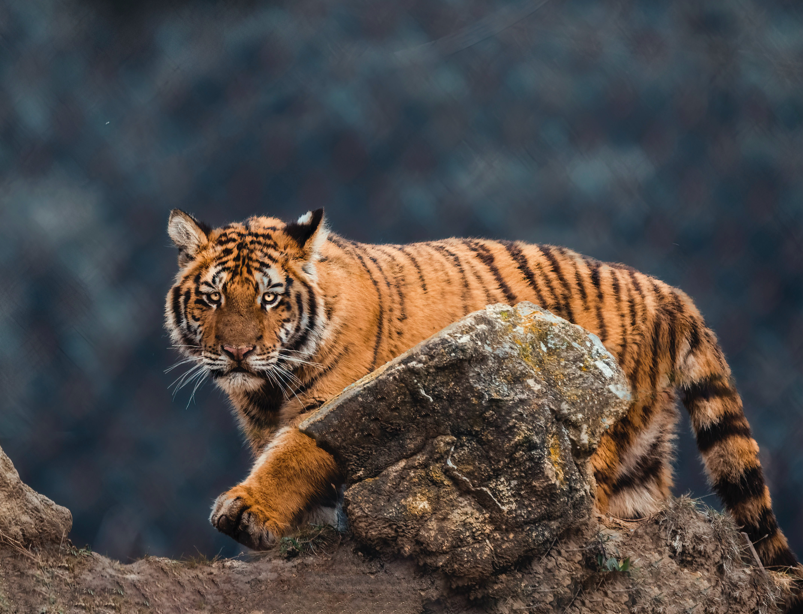

This website is awesome because it is about tigers
This website has information, quotes, and images about tigers. Tigers are very interesting animals.
Some random information.

The Siberian tiger (Panthera tigris altaica), also known as the Manchurian tiger, Korean tiger, Amur tiger or Ussurian tiger, is an endangered species that lives in Northern Asia (China, Russia and Korea), although its territory was once much larger. Even though the Bengal tiger is larger in the wild, the Siberian tiger often grows to be larger than the Bengal in captivity, making it the largest purebred cat in the world.
If you’re lucky enough to see a white tiger, it may be an albino or the result of a genetic mutation. If it’s white with black stripes and has blue eyes, this coloration is caused by a genetic mutation called leucism and is specific to the Bengal tiger. Both parents must have the gene for a white cub to occur. It’s rare, however, only resulting in one out of 10,000 births.
The Bengal tiger (Panthera tigris tigris), also called the Indian tiger or the Royal Bengal tiger is native to the Indian subcontinent. Although it once roamed a much larger area, the Bengal is currently found in India, Bangladesh, Nepal and Bhutan.

The Sumatran tiger (Panthera tigris sumatrae) is the smallest tiger subspecies and lives on the Indonesian island of Sumatra. Because it lives only on an island, it has been isolated from other tigers. This has resulted in genetics that are different from its “mainland” cousins. The Sumatran is a critically endangered species. Two other tiger subspecies, the Bali tiger and the Javan tiger, once occupied the same area but are now extinct.
A tiger does not ignore or slight any small animal. The way he catches a mouse and catches and devours a cow are the same.